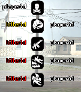

SendDeathMessage
From SA-MP Wiki

The 5 most recent kills are shown on the right side of players' screens. Pressing F9 will hide/show the list.
Description:
Adds a death to the 'killfeed' on the right-hand side of the screen for all players.
(killer, playerid, weapon)
| killer | The ID of the killer (can be INVALID_PLAYER_ID). |
| playerid | The ID of the player that died. |
| weapon | The reason (not always a weapon) for the victim's death. Special icons can also be used (ICON_CONNECT and ICON_DISCONNECT). |
Return Values:
This function always returns 1, even if the function fails to execute. The function fails to execute (no death message shown) if 'playerid' is invalid. If 'reason' is invalid, a generic skull-and-crossbones icon is shown. 'killerid' being invalid (INVALID_PLAYER_ID) is valid.
Example Usage:
public OnPlayerDeath(playerid, killerid, reason) { SendDeathMessage(killerid, playerid, reason); return 1; }
| Tips
|
|
[edit]
Related Functions
The following functions may be helpful as they relate to this function in one way or another.
- SendDeathMessageToPlayer: Add a kill to the death list for a player.
[edit]
Related Callbacks
The following callbacks might be useful, as they're related to this function in one way or another.
- OnPlayerDeath: Called when a player dies.

{kind=link}